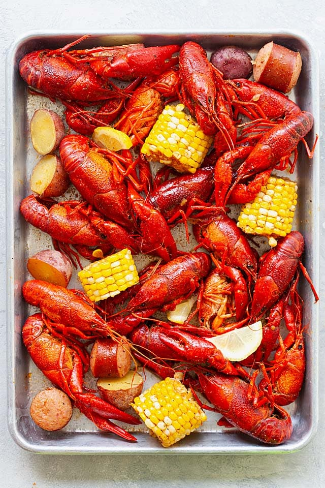

Crawfish

Description
Mouthwatering crawfish recipes just like how it's done in New Orleans. Made with live crawfish, Louisiana and
Cajun seasonings, corn, red potato and smoked sausage, so delicious!
Ingredients
- 3 lbs. (1.3 kg) crawfish
- 8 -10 cups water
- 6 oz. (170 g) Louisiana Crawfish Shrimp & Crab Boil
- 2 tablespoons McCormick Cajun seasoning
- 1 tablespoon McCormick Lemon Pepper seasoning
- 1 head garlic, unpeeled but separated
- 3 ears corn, cut into 2-inch pieces
- 12 oz. (340 g) small red potatoes, halved
- 14 oz. (400 g) smoked sausage, cut into chunky pieces (Hillshire Farms)
- 1 lemon, sliced into rounds
Steps
- Fill a large pot with water. Bring the water to a boil. Add the Louisiana Crawfish Shrimp and Crab Boil,
Cajun seasoning and Lemon Pepper seasoning. Stir well to a rolling boil.
- Add the garlic, corn, potatoes, sausage and lemon slices. Cover the pot with its lid and cook for 10
minutes.
- Taste the crawfish boil water. If it's too salty, add more water. If it's too bland, add more seasonings to
taste. Transfer the crawfish into the pot and cook for 3-4 minutes, with the lid covered.
- Turn off the heat and let the crawfish soak for 10 minutes. The longer the crawfish soaks, the spicier they
will be. Remove all the ingredients using a strainer and serve immediately. Discard the crawfish boil water.